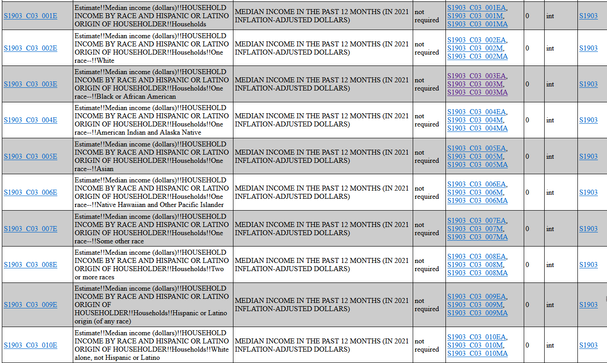

U.S. Census Bureau Data#
Census Data API Discovery Tool
American Community Survey: 5-Year Estimates: Subject Tables 5-Year#
2017-2021 ACS 5-Year Subject Tables
Description:
“The American Community Survey (ACS) is an ongoing survey that provides data every year – giving communities the current information they need to plan investments and services. The ACS covers a broad range of topics about social, economic, demographic, and housing characteristics of the U.S. population. The subject tables include the following geographies: nation, all states (including DC and Puerto Rico), all metropolitan areas, all congressional districts, all counties, all places and all tracts. Subject tables provide an overview of the estimates available in a particular topic. The data are presented as both counts and percentages. There are over 66,000 variables in this dataset.”
Vintage:
2021
Dataset Name:
acs› acs5› subject
Dataset Type:
Aggregate
Label prefix = Estimate!!Median income (dollars)!!HOUSEHOLD INCOME BY RACE AND HISPANIC OR LATINO ORIGIN OF HOUSEHOLDER!!Households
Concept = MEDIAN INCOME IN THE PAST 12 MONTHS (IN 2021 INFLATION-ADJUSTED DOLLARS)
Required = not required
Limit = 0
Predicate Type = int
Group = S1903
Name |
Label |
Attributes EA |
Attributes M |
Attributes MA |
|---|---|---|---|---|
- |
||||
One race–!!White |
||||
One race–!!Black or African American |
||||
One race–!!American Indian and Alaska Native |
||||
One race–!!Asian |
||||
One race–!!Native Hawaiian and Other Pacific Islander |
||||
One race–!!Some other race |
||||
Two or more races |
||||
Hispanic or Latino origin (of any race) |
||||
White alone, not Hispanic or Latino |
Estimate and Annotation Values
EA - Annotation of Estimate
M - Margin of Error
MA - Annotation of Margin of Error
Contains Geography Hierarchy
Getting Started with American Community Survey Data in R and Python | U.S. Census Bureau | YouTube
Import Libraries#
Standard Libraries#
import os
from dotenv import load_dotenv
External Libraries#
from cenpy import remote
import matplotlib.pyplot as plt
import pandas as pd
Configure Libraries#
%matplotlib inline
load_dotenv()
True
Define Variables#
Inputs#
census_api = os.environ.get('CENSUS_API')
Outputs#
census_folder_output = 'data/census'
census_file_output = 'census-income-race-2021-5yr.csv'
census_path_output = f'{census_folder_output}/{census_file_output}'
if not os.path.exists(census_folder_output):
print('Creating new folder for ACS dataset: "{census_folder_output}"')
os.makedirs(census_folder_output)
else:
print(f'"{census_folder_output}" folder already exists')
"data/census" folder already exists
Get Data From Census Data API#
Dataset: ACS: 5-Year Estimates: Subject Tables 5-Year#
subject_table_conn = remote.APIConnection(
api_name = 'ACSST5Y2021',
apikey = census_api
)
Confirm Connection#
subject_table_conn
Connection to American Community Survey: 5-Year Estimates: Subject Tables 5-Year (ID: https://api.census.gov/data/id/ACSST5Y2021)
View Variable Data#
ACSST5Y2021_var_df = subject_table_conn.variables
ACSST5Y2021_var_df.head()
| label | concept | predicateType | group | limit | predicateOnly | hasGeoCollectionSupport | attributes | required | |
|---|---|---|---|---|---|---|---|---|---|
| for | Census API FIPS 'for' clause | Census API Geography Specification | fips-for | N/A | 0 | True | NaN | NaN | NaN |
| in | Census API FIPS 'in' clause | Census API Geography Specification | fips-in | N/A | 0 | True | NaN | NaN | NaN |
| ucgid | Uniform Census Geography Identifier clause | Census API Geography Specification | ucgid | N/A | 0 | True | True | NaN | NaN |
| S0804_C04_068E | Estimate!!Public transportation (excluding tax... | MEANS OF TRANSPORTATION TO WORK BY SELECTED CH... | float | S0804 | 0 | NaN | NaN | S0804_C04_068EA,S0804_C04_068M,S0804_C04_068MA | NaN |
| S0503_C02_078E | Estimate!!Foreign born; Born in Europe!!Civili... | SELECTED CHARACTERISTICS OF THE FOREIGN-BORN P... | float | S0503 | 0 | NaN | NaN | S0503_C02_078EA,S0503_C02_078M,S0503_C02_078MA | NaN |
Specify Search Criteria for label column#
income#
income_search = 'income'
race#
race_search = 'race'
Filter Variable DataFrame by Search Criteria#
print(f'number of labels: {len(ACSST5Y2021_var_df)}')
number of labels: 18827
income_race_filter = ACSST5Y2021_var_df['label'].str.contains(income_search) & ACSST5Y2021_var_df['label'].str.contains(race_search)
Preview Selected Labels#
ACSST5Y2021_var_df[income_race_filter][['label', 'attributes']].sort_index()
| label | attributes | |
|---|---|---|
| S1902_C03_020E | Estimate!!Mean income (dollars)!!PER CAPITA IN... | S1902_C03_020EA,S1902_C03_020M,S1902_C03_020MA |
| S1902_C03_021E | Estimate!!Mean income (dollars)!!PER CAPITA IN... | S1902_C03_021EA,S1902_C03_021M,S1902_C03_021MA |
| S1902_C03_022E | Estimate!!Mean income (dollars)!!PER CAPITA IN... | S1902_C03_022EA,S1902_C03_022M,S1902_C03_022MA |
| S1902_C03_023E | Estimate!!Mean income (dollars)!!PER CAPITA IN... | S1902_C03_023EA,S1902_C03_023M,S1902_C03_023MA |
| S1902_C03_024E | Estimate!!Mean income (dollars)!!PER CAPITA IN... | S1902_C03_024EA,S1902_C03_024M,S1902_C03_024MA |
| S1902_C03_025E | Estimate!!Mean income (dollars)!!PER CAPITA IN... | S1902_C03_025EA,S1902_C03_025M,S1902_C03_025MA |
| S1902_C03_026E | Estimate!!Mean income (dollars)!!PER CAPITA IN... | S1902_C03_026EA,S1902_C03_026M,S1902_C03_026MA |
| S1902_C03_027E | Estimate!!Mean income (dollars)!!PER CAPITA IN... | S1902_C03_027EA,S1902_C03_027M,S1902_C03_027MA |
| S1903_C03_002E | Estimate!!Median income (dollars)!!HOUSEHOLD I... | S1903_C03_002EA,S1903_C03_002M,S1903_C03_002MA |
| S1903_C03_003E | Estimate!!Median income (dollars)!!HOUSEHOLD I... | S1903_C03_003EA,S1903_C03_003M,S1903_C03_003MA |
| S1903_C03_004E | Estimate!!Median income (dollars)!!HOUSEHOLD I... | S1903_C03_004EA,S1903_C03_004M,S1903_C03_004MA |
| S1903_C03_005E | Estimate!!Median income (dollars)!!HOUSEHOLD I... | S1903_C03_005EA,S1903_C03_005M,S1903_C03_005MA |
| S1903_C03_006E | Estimate!!Median income (dollars)!!HOUSEHOLD I... | S1903_C03_006EA,S1903_C03_006M,S1903_C03_006MA |
| S1903_C03_007E | Estimate!!Median income (dollars)!!HOUSEHOLD I... | S1903_C03_007EA,S1903_C03_007M,S1903_C03_007MA |
| S1903_C03_008E | Estimate!!Median income (dollars)!!HOUSEHOLD I... | S1903_C03_008EA,S1903_C03_008M,S1903_C03_008MA |
| S1903_C03_009E | Estimate!!Median income (dollars)!!HOUSEHOLD I... | S1903_C03_009EA,S1903_C03_009M,S1903_C03_009MA |
Store Selected names and labels in a dictionary#
Compare results with Census API documentation for variables

names_dict = {
'S1903_C03_001E': 'Households',
'S1903_C03_002E': 'White',
'S1903_C03_003E': 'Black or African American',
'S1903_C03_004E': 'American Indian and Alaska Native',
'S1903_C03_005E': 'Asian',
'S1903_C03_006E': 'Native Hawaiian and Other Pacific Islander',
'S1903_C03_007E': 'One race_Some other race',
'S1903_C03_008E': 'Two or more races',
'S1903_C03_009E': 'Hispanic or Latino origin (of any race)',
'S1903_C03_010E': 'White alone, not Hispanic or Latino'
}
names_list = list(names_dict.keys())
View Geography Options#
subject_table_conn.geographies
{'fips': name geoLevelDisplay \
0 us 010
1 region 020
2 division 030
3 state 040
4 county 050
5 county subdivision 060
6 subminor civil division 067
7 tract 140
8 place 160
9 consolidated city 170
10 alaska native regional corporation 230
11 american indian area/alaska native area/hawaii... 250
12 tribal subdivision/remainder 251
13 american indian area/alaska native area (reser... 252
14 american indian area (off-reservation trust la... 254
15 tribal census tract 256
16 state (or part) 260
17 metropolitan/micropolitan statistical area 310
18 principal city (or part) 312
19 metropolitan division 314
20 combined statistical area 330
21 combined new england city and town area 335
22 new england city and town area 350
23 principal city 352
24 necta division 355
25 urban area 400
26 congressional district 500
27 state legislative district (upper chamber) 610
28 state legislative district (lower chamber) 620
29 public use microdata area 795
30 zip code tabulation area 860
31 school district (elementary) 950
32 school district (secondary) 960
33 school district (unified) 970
referenceDate requires \
0 2021-01-01 NaN
1 2021-01-01 NaN
2 2021-01-01 NaN
3 2021-01-01 NaN
4 2021-01-01 [state]
5 2021-01-01 [state, county]
6 2021-01-01 [state, county, county subdivision]
7 2021-01-01 [state, county]
8 2021-01-01 [state]
9 2021-01-01 [state]
10 2021-01-01 [state]
11 2021-01-01 NaN
12 2021-01-01 [american indian area/alaska native area/hawai...
13 2021-01-01 NaN
14 2021-01-01 NaN
15 2021-01-01 [american indian area/alaska native area/hawai...
16 2021-01-01 [american indian area/alaska native area/hawai...
17 2021-01-01 NaN
18 2021-01-01 [metropolitan/micropolitan statistical area, s...
19 2021-01-01 [metropolitan/micropolitan statistical area]
20 2021-01-01 NaN
21 2021-01-01 NaN
22 2021-01-01 NaN
23 2021-01-01 [new england city and town area, state (or part)]
24 2021-01-01 [new england city and town area]
25 2021-01-01 NaN
26 2021-01-01 [state]
27 2021-01-01 [state]
28 2021-01-01 [state]
29 2021-01-01 [state]
30 2021-01-01 NaN
31 2021-01-01 [state]
32 2021-01-01 [state]
33 2021-01-01 [state]
wildcard \
0 NaN
1 NaN
2 NaN
3 NaN
4 [state]
5 [county]
6 NaN
7 [county]
8 [state]
9 [state]
10 [state]
11 NaN
12 [american indian area/alaska native area/hawai...
13 NaN
14 NaN
15 NaN
16 NaN
17 NaN
18 NaN
19 NaN
20 NaN
21 NaN
22 NaN
23 [state (or part)]
24 NaN
25 NaN
26 [state]
27 NaN
28 NaN
29 [state]
30 NaN
31 [state]
32 [state]
33 [state]
optionalWithWCFor
0 NaN
1 NaN
2 NaN
3 NaN
4 state
5 county
6 NaN
7 county
8 state
9 state
10 state
11 NaN
12 american indian area/alaska native area/hawaii...
13 NaN
14 NaN
15 NaN
16 NaN
17 NaN
18 NaN
19 NaN
20 NaN
21 NaN
22 NaN
23 state (or part)
24 NaN
25 NaN
26 state
27 NaN
28 NaN
29 state
30 NaN
31 state
32 state
33 state }
Get Census Data: Medium Income in the Past 12 Months#
Note: 2021 inflation-adjusted dollars
if os.path.isfile(census_path_output):
income_race_rename_df = pd.read_csv(census_path_output, index_col = 0)
else:
income_race_df = subject_table_conn.query(names_list, geo_unit = 'zip code tabulation area')
income_race_rename_df = income_race_df.copy()
income_race_rename_df.rename(columns = names_dict, inplace = True)
income_race_rename_df.to_csv(census_path_output)
Preview Census Data#
Notes on ACS Estimate and Annotation Values
Estimate Value |
Annotation Value |
Meaning |
|---|---|---|
-666666666 |
- |
“The estimate could not be computed because there were an insufficient number of sample observations. For a ratio of medians estimate, one or both of the median estimates falls in the lowest interval or highest interval of an open-ended distribution. The estimate could not be computed because there were an insufficient number of sample observations. For a ratio of medians estimate, one or both of the median estimates falls in the lowest interval or highest interval of an open-ended distribution. For a 5-year median estimate, the margin of error associated with a median was larger than the median itself.” |
income_race_rename_df
| Households | White | Black or African American | American Indian and Alaska Native | Asian | Native Hawaiian and Other Pacific Islander | One race_Some other race | Two or more races | Hispanic or Latino origin (of any race) | White alone, not Hispanic or Latino | zip code tabulation area | |
|---|---|---|---|---|---|---|---|---|---|---|---|
| 0 | 15292 | 15913 | 22222 | -666666666 | -666666666 | -666666666 | 10351 | 17958 | 15309 | -666666666 | 601 |
| 1 | 18716 | 17795 | 23424 | -666666666 | -666666666 | -666666666 | 14139 | 20888 | 18407 | 21593 | 602 |
| 2 | 16789 | 17434 | 15545 | -666666666 | -666666666 | -666666666 | 15026 | 16000 | 16580 | 87768 | 603 |
| 3 | 18835 | 20279 | -666666666 | -666666666 | -666666666 | -666666666 | 16656 | -666666666 | 18762 | -666666666 | 606 |
| 4 | 21239 | 22746 | 21667 | -666666666 | -666666666 | -666666666 | 19298 | 19498 | 20765 | -666666666 | 610 |
| ... | ... | ... | ... | ... | ... | ... | ... | ... | ... | ... | ... |
| 33769 | -666666666 | -666666666 | -666666666 | -666666666 | -666666666 | -666666666 | -666666666 | -666666666 | -666666666 | -666666666 | 99923 |
| 33770 | 70625 | 84583 | -666666666 | 43750 | -666666666 | -666666666 | -666666666 | 59375 | 89583 | 83750 | 99925 |
| 33771 | 58229 | 168750 | -666666666 | 51667 | -666666666 | -666666666 | -666666666 | 53393 | -666666666 | 168750 | 99926 |
| 33772 | -666666666 | -666666666 | -666666666 | -666666666 | -666666666 | -666666666 | -666666666 | -666666666 | -666666666 | -666666666 | 99927 |
| 33773 | 54946 | 59750 | -666666666 | 49375 | -666666666 | -666666666 | -666666666 | -666666666 | 29154 | 60208 | 99929 |
33774 rows × 11 columns
zip_codes_in_nyc = [
11101, # Long Island City
10001, # Hudson Yards
10458, # Fordham
10304, # Stapleton
11209 # Bay Ridge
]
zip_code_filter = income_race_rename_df['zip code tabulation area'].isin(zip_codes_in_nyc)
income_race_rename_df[zip_code_filter].head()
| Households | White | Black or African American | American Indian and Alaska Native | Asian | Native Hawaiian and Other Pacific Islander | One race_Some other race | Two or more races | Hispanic or Latino origin (of any race) | White alone, not Hispanic or Latino | zip code tabulation area | |
|---|---|---|---|---|---|---|---|---|---|---|---|
| 2577 | 101409 | 125693 | 35722 | -666666666 | 88882 | -666666666 | 61103 | 83182 | 62735 | 132053 | 10001 |
| 2649 | 64539 | 75472 | 48695 | -666666666 | 69277 | -666666666 | 36250 | -666666666 | 46179 | 85683 | 10304 |
| 2666 | 38768 | 34387 | 35604 | 25809 | 57188 | -666666666 | 41297 | 34770 | 39360 | 31875 | 10458 |
| 2839 | 98920 | 122539 | 33442 | 47574 | 116857 | -666666666 | 49401 | -666666666 | 49958 | 126141 | 11101 |
| 2853 | 84145 | 88309 | 73349 | 118491 | 77943 | -666666666 | 75847 | 78409 | 77067 | 89576 | 11209 |